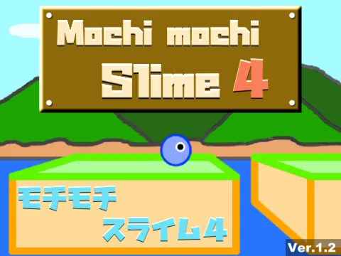

{{symbols}}
作品集へ
nakakou
ナカコウの作品集
{{shortcuts}}
作品プレビュー

Scratch
モチモチスライム 4
›
−
□
×
{{menuIcon}}
メニュー
{{weatherIcon}}
{{soundIcon}}
{{zoomIcon}}
{{menu}}
動きを止める
{{zoomIcon}}
画面を拡大
ナカコウ
作品集
Scratchのゲーム、制作の解説、
3Dプリントで作る機構。
{{portfolioPicks}}
制作物をすべて見る
→
GitHub・公開資料
→
正面に戻す
からくり金庫を見る
リフトを収納
起動中
スキップ ›
ホーム
·
制作物
·
相互リンク
{{content}}